第三章 3D Material Tools 三维材质工具
- Blinn [3Bi]
- Channel Boolean Material [3Bol]
- Cook Torrance [3CT]
- Material Merge 3D [3MM]
- Phong [3Ph]
- Reflect [3RR]
- Stereo Mix [3SMM]
- Ward [3Wd]
| 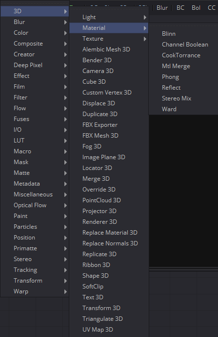 | 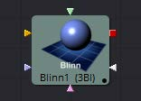 | 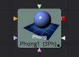 |
| 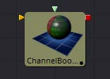 | 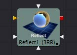 | |
| 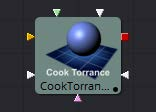 |  |
|
| 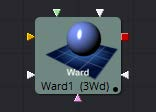 |  |
Blinn [3Bi]
Blinn工具是一种基本的照明材质，可以应用于三维场景的几何物体。它描述了物体对光线的反应，并提供了大量的纹理贴图输入，允许对材质的漫反射、高光和凹凸贴图组件进行精细控制。
大多数几何物体工具的Material选项卡中提供的标准基本材质是Blinn工具的简化版本。主要的区别是Blinn工具提供了额外的纹理映射输入，而不仅仅是漫反射。
Blinn工具输出一个可以连接到任何3D几何物体工具材质输入的3D材质。
Fusion实现的Blinn模型计算高光为光源与观测者之间的表面法线与半角向量的点积(dot(N, H))。这可能并不总是匹配其他3D应用程序使用的Blinn模型照明模型。
外部输入
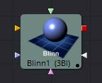
Blinn.DiffuseTex
[橙色，可选的]此输入将接受2D图像或3D材质作为漫反射纹理贴图。
Blinn.SpecularColorTex
[绿色，可选的]此输入将接受2D图像或3D材质作为高光彩色纹理贴图。
Blinn.SpecularIntensityTex
[洋红色，可选的]此输入将接受2D图像或3D材质作为材质高光高光的强度贴图。当输入为2D图像时，alpha通道用于创建贴图，而颜色通道则被丢弃。
Blinn.SpecularExponentTex
[淡蓝色，可选的]此输入将接受2D图像或3D材质作为材质高光的衰减贴图。当输入为2D图像时，alpha通道用于创建贴图，而颜色通道则被丢弃。
Blinn.BumpmapTex
[白色，可选的]此输入将接受2D图像或3D材质，然后使用RGB信息作为纹理空间法线。
这些输入中的每一个都将纹理贴图中的像素乘以工具本身中相应命名的参数。这为材质的缩放部分提供了一种有效的方法。
当工具有像这个一样多的输入时，通常很难精确地进行连接。按住Option(Mac OS X)或Alt(Windows)键，同时将另一个工具的输出拖动到工具块上，并在释放鼠标左键时按住Option或Alt键。将出现一个小菜单，其中列出该工具提供的所有输入。单击所需的输入完成连接。
或者，您可以使用鼠标右键从工具中拖动输出，以激活相同的菜单。
Controls
Diffuse
Diffuse描述基本表面特征，没有任何额外的效果，如反射或高光。除了定义对象的基本颜色外，漫反射颜色还定义对象的透明度。漫反射纹理贴图中的alpha可以用来使任何物体表面的部分透明。
Diffuse Color
材质的Diffuse Color描述了材质在间接或环境光照射下呈现的基色。如果提供了漫反射纹理贴图，那么这里提供的颜色值将乘以纹理中的颜色值。
Alpha
这个滑块设置材质的Alpha通道值。这同样影响漫反射和高光颜色，并影响渲染输出中材质的alpha值。如果提供了漫反射纹理贴图，那么这里的alpha值集将乘以纹理贴图中的alpha值。
Opacity
降低材质的不透明度会同样降低高光和漫反射颜色的颜色和alpha值，使材质透明。
Specular
Specular部分的参数描述了表面高光的外观。对于每个光照模型，这些值的计算方法不同。
Specular Color
Specular Color决定了从光亮表面反射的光的颜色。一种材料的高光越高，它看起来就越有光泽。像塑料和玻璃这样的表面往往有白色高光，而金属表面则有像黄金这样的高光，这些高光从材质的颜色中继承了它们的颜色。如果提供了高光纹理映射，那么这里提供的值将乘以纹理中的颜色值。
Specular Intensity
Specular Intensity控制高光的强度。如果提供高光强度纹理，则此值乘以纹理的alpha值。
Specular Exponent
Specular Exponent控制高光的衰减。值越大，衰减越明显，材质就显得越光滑和有光泽。如果提供了高光指数纹理，则该值乘以纹理贴图的alpha值。
Transmittance
Transmittance控制着光通过材质的方式。例如，一个实心的蓝色球体会投射出一个黑色的阴影，但是一个半透明的蓝色塑料球体会投射出一个密度低得多的蓝色阴影。
还有一个单独的Opacity选项。不透明度决定了渲染时实际表面的透明度。Fusion允许分别调整不透明度和透射率。对于那些刚开始不熟悉3D软件的人来说，这可能有点违反直觉。有可能存在一个表面是完全不透明的，但会100%地透射到达它的光，有效地使它成为一个发光/发射表面。
Attenuation
Attenuation决定了有多少颜色通过物体。对于具有透射阴影的对象，将衰减设置为(1,1,1)，这意味着100%的绿色、蓝色和红色光线通过该对象。将此颜色设置为RGB(1,0,0)意味着材质将传输100%到达表面的红色，但没有绿色或蓝色的光。这允许了“彩色玻璃”阴影。
Alpha Detail
当Alpha Detail滑块设置为0时，对象的Alpha通道将被忽略，整个对象将投射阴影。如果将其设置为1，alpha通道将确定对象投射阴影的部分。
Color Detail
Color Detail滑块通过漫反射颜色+纹理颜色调节通过表面的光线。使用此方法可以投射阴影，其中包含应用于对象的纹理的颜色细节。将滑块从0增加到1会给阴影带来更多的漫反射颜色和纹理颜色。注意，当传输颜色时忽略了对象的alpha值和不透明度，允许具有实alpha值的对象仍然将其颜色透射到阴影。
Saturation
Saturation滑块控制透射到阴影的颜色部分的饱和度。将此设置为0.0将导致单色阴影。
Receives Lighting/Shadows
这些复选框控制材质是否受到场景中光照和阴影的影响。如果关闭，该对象将始终是完全点亮和/或无阴影。
Two Sided Lighting
通过在表面的背面添加一组面向相反方向的法线，从而使曲面实际上是双面的。这通常是关闭的，以提高渲染速度，但可以为2D表面或不完全封闭的对象打开，以允许反向或内部表面也可见。
通常，在3D应用程序中，只有一个表面的正面是可见的，而背面是经过筛选的，因此，如果相机在3D应用程序中围绕一个平面旋转，当它到达背面时，这个平面将变得不可见。在3D应用程序中，让一个平面双面化相当于在第一个平面上添加另一个平面，但旋转180度，因此法线在背面朝相反的方向。因此，当你绕着背面旋转时，你会看到第二个像平面，它的法线朝相反的方向。
当你制作一个双面的曲面时，Fusion和3D应用做的是一样的事情。由于Fusion在缺省情况下不会剔除背面的多边形，所以出现了关于双面的混淆。如果你在Fusion中绕着一个单面旋转，你仍然会从背面看到它（但你看到的是正面复制到背面，就像它是透明的一样）。让平面两面化实际上增加了第二套法线到平面的背面。
注意：一旦您使表面透明，这将变得相当混乱，因为同样的规则仍然适用并产生结果，这是违反直觉的。如果你从正面看一个从背面照亮的透明双面表面，它看起来就不亮。
Material ID
此滑块设置分配给此材质的数字标识符。如果渲染器中启用了相应选项，这个值将被渲染到MatID辅助通道中。
Channel Boolean Material [3Bol]
Channel Boolean Material可用于通过数学运算重新映射和修改3D材质的通道。 例如，如果要使用材质的红色通道来控制使用alpha通道的照明模型的标量输入（例如，Blinn.SpecularExponent），则可以在此处重新映射通道。 此外，它允许使用几何物体特定的信息，如纹理空间坐标和法线。
外部输入
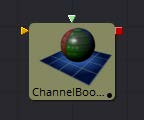
ChannelBooleanMaterial.BackgroundMaterial
[橙色，可选的]此输入将接受2D图像或3D材质。
ChannelBooleanMaterial.ForegroundMaterial
[绿色，可选的]此输入将接受2D图像或3D材质。
Controls
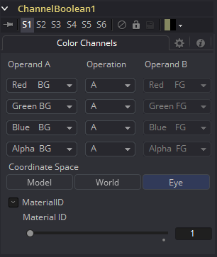
Operand A/B
每个输出RGBA通道一个的Operand菜单允许用户为相应的通道设置所需的输入信息。
Red/Green/Blue/Alpha FG
读取前景材质的颜色信息。
Red/Green/Blue/Alpha BG
读取背景材质的颜色信息。
Black/White/Mid Gray
将通道的值设置为0.1或0.5。
Hue/Lightness/Saturation FG
读取前景材质的颜色信息，将其转换为HLS色彩空间，并将所选信息放入相应的通道中。
Hue/Lightness/Saturation BG
读取背景材质的颜色信息，将其转换为HLS色彩空间，并将所选信息放入相应的通道中。
Luminance FG
读取前景材质的颜色信息，并计算通道的亮度值。
Luminance BG
读取背景材质的颜色信息，并计算通道的亮度值。
X/Y/Z Position FG
将通道的值设置为三维空间中像素的位置。向量信息在眼空间中返回。
U/V/W Texture FG
将前景材质的纹理空间坐标应用于通道。
U/V/W EnvCoords FG
将环境纹理空间坐标应用于通道。在修改环境纹理坐标的工具上游使用它，如Reflect 3D工具。
X/Y/Z Normal
将通道的值设置为法向量的选定轴。向量在眼空间中返回。
Operation
确定如何组合操作数的Operation。
- A: 仅对输出通道使用Operand A。
- B: 仅对输出通道使用Operand B。
- 1-A: 从1中减去Operand A的值。
- 1-B: 从1中减去Operand B的值。
- A+B: 相加Operand A和B的值。
- A-B: 从Operand A中减去B的值。
- A*B: 将两个Operand的值相乘。
- A/B: 将Operand B的值除以A。
- min(A,B): 比较Operand A和B的值并返回较小的值。
- max(A,B): 比较Operand A和B的值并返回较大的值。
- avg(A,B): 返回两个Operand的平均值。
Material ID
此滑块设置分配给此材质的数字标识符。如果渲染器中启用了相应选项，这个值将被渲染到MatID辅助通道中。
Cook Torrance [3CT]
Cook Torrance工具是一种基本的照明材质，可应用于3D场景中的几何物体。 此工具的漫反射计算类似于基本材质和Blinn工具中使用的漫反射计算，但使用优化的Fresnel/Beckmann方程评估镜面反射高光。 该照明模型主要用于遮蔽金属或其他有光泽和高反射的表面。
Cook Torrance工具输出一个可连接到任何3D几何物体工具上的材质输入的3D Material。
外部输入
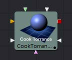
CookTorrance.DiffuseTex
[橙色，可选的]此输入将接受2D图像或3D材质作为漫反射纹理贴图。
CookTorrance.SpecularColorTex
[绿色，可选的]此输入将接受2D图像或3D材质作为高光彩色纹理贴图。
CookTorrance.SpecularIntensityTex
[洋红色，可选的]此输入将接受2D图像或3D材质作为材质高光高光的强度贴图。当输入为2D图像时，alpha通道用于创建贴图，而颜色通道则被丢弃。
CookTorrance.SpecularExponentTex
[淡蓝色，可选的]此输入将接受2D图像或3D材质作为材质高光的衰减贴图。当输入为2D图像时，alpha通道用于创建贴图，而颜色通道则被丢弃。
CookTorrance.SpecularRefractiveIndexTex
[白色，可选]此输入将接受2D图像或3D材质，以用作修改镜面折射率粗糙度的贴图。 纹理贴图的alpha乘以折射率的值。
CookTorrance.BumpmapTex
[白色，可选的]此输入将接受2D图像或3D材质，然后使用RGB信息作为纹理空间法线。
这些输入中的每一个都将纹理贴图中的像素乘以工具本身中等效命名的参数。这提供了用于缩放部分材质的有效方法。
当工具有像这个一样多的输入时，通常很难精确地进行连接。按住Option(Mac OS X)或Alt(Windows)键，同时将另一个工具的输出拖动到工具块上，并在释放鼠标左键时按住Option或Alt键。将出现一个小菜单，其中列出该工具提供的所有输入。单击所需的输入完成连接。
Controls
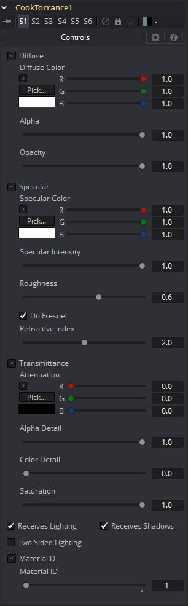
Diffuse
Diffuse描述基本表面特征，没有任何额外的效果，如反射或高光。除了定义对象的基本颜色外，漫反射颜色还定义对象的透明度。漫反射纹理贴图中的alpha可以用来使任何物体表面的部分透明。
Diffuse Color
材质的Diffuse Color描述了材质在间接或环境光照射下呈现的基色。如果提供了漫反射纹理贴图，那么这里提供的颜色值将乘以纹理中的颜色值。
Alpha
这个滑块设置材质的Alpha通道值。这同样影响漫反射和高光颜色，并影响渲染输出中材质的alpha值。如果提供了漫反射纹理贴图，那么这里的alpha值集将乘以纹理贴图中的alpha值。
Opacity
降低材质的不透明度会同样降低高光和漫反射颜色的颜色和alpha值，使材质透明。
Specular
Specular部分的参数描述了表面高光的外观。对于每个光照模型，这些值的计算方法不同。
Specular Color
Specular Color决定了从光亮表面反射的光的颜色。一种材料的高光越高，它看起来就越有光泽。像塑料和玻璃这样的表面往往有白色高光，而金属表面则有像黄金这样的高光，这些高光从材质的颜色中继承了它们的颜色。如果提供了高光纹理映射，那么这里提供的值将乘以纹理中的颜色值。
Specular Intensity
Specular Intensity控制高光的强度。如果提供高光强度纹理，则此值乘以纹理的alpha值。
Roughness
镜面高光的Roughness描述了镜面高光在表面上的扩散。值越大，衰减越宽，表面出现的拉丝和金属越多。如果提供粗糙度纹理贴图，则将该值乘以纹理的alpha值。
Do Fresnel
选中此复选框将为材料照明模型添加Fresnel计算。通过考虑材料的折射率，这将提供更逼真的金属表面。
Refractive Index
选中Do Fresnel复选框时，将显示此滑块。Refractive Index仅适用于高光的计算； 它不会通过透明表面进行实际的光折射。如果提供折射率纹理贴图，则将该值乘以输入的alpha值。
Transmittance
Transmittance控制着光通过材质的方式。例如，一个实心的蓝色球体会投射出一个黑色的阴影，但是一个半透明的蓝色塑料球体会投射出一个密度低得多的蓝色阴影。
还有一个单独的Opacity选项。不透明度决定了渲染时实际表面的透明度。Fusion允许分别调整不透明度和透射率。对于那些刚开始不熟悉3D软件的人来说，这可能有点违反直觉。有可能存在一个表面是完全不透明的，但会100%地透射到达它的光，有效地使它成为一个发光/发射表面。
Attenuation
Attenuation决定了有多少颜色通过物体。对于具有透射阴影的对象，将衰减设置为(1,1,1)，这意味着100%的绿色、蓝色和红色光线通过该对象。将此颜色设置为RGB(1,0,0)意味着材质将传输100%到达表面的红色，但没有绿色或蓝色的光。这允许了“彩色玻璃”阴影。
Alpha Detail
当Alpha Detail滑块设置为0时，对象的Alpha通道将被忽略，整个对象将投射阴影。如果将其设置为1，alpha通道将确定对象投射阴影的部分。
Color Detail
Color Detail滑块通过漫反射颜色+纹理颜色调节通过表面的光线。使用此方法可以投射阴影，其中包含应用于对象的纹理的颜色细节。将滑块从0增加到1会给阴影带来更多的漫反射颜色和纹理颜色。注意，当传输颜色时忽略了对象的alpha值和不透明度，允许具有实alpha值的对象仍然将其颜色透射到阴影。
Saturation
Saturation滑块控制透射到阴影的颜色部分的饱和度。将此设置为0.0将导致单色阴影。
Receives Lighting/Shadows
这些复选框控制材质是否受到场景中光照和阴影的影响。如果关闭，该对象将始终是完全点亮和/或无阴影。
Two Sided Lighting
通过在表面的背面添加一组面向相反方向的法线，从而使曲面实际上是双面的。这通常是关闭的，以提高渲染速度，但可以为2D表面或不完全封闭的对象打开，以允许反向或内部表面也可见。
通常，在3D应用程序中，只有一个表面的正面是可见的，而背面是经过筛选的，因此，如果相机在3D应用程序中围绕一个平面旋转，当它到达背面时，这个平面将变得不可见。在3D应用程序中，让一个平面双面化相当于在第一个平面上添加另一个平面，但旋转180度，因此法线在背面朝相反的方向。因此，当你绕着背面旋转时，你会看到第二个像平面，它的法线朝相反的方向。
注意：一旦您使表面透明，这将变得相当混乱，因为同样的规则仍然适用并产生结果，这是违反直觉的。如果你从正面看一个从背面照亮的透明双面表面，它看起来就不亮。
Material ID
此滑块设置分配给此材质的数字标识符。如果渲染器中启用了相应选项，这个值将被渲染到MatID辅助通道中。
Material Merge 3D [3MM]
Material Merge工具可用于将两个单独的材质组合在一起。 此工具可用于复合材质工具，将多个照明材质（Blinn，Cook Torrance）与纹理工具（Bumpmap，Reflection）组合在一起，以创建复杂的着色器网络。
该工具还提供了一种为组合材质指定新材质标识符的机制。
外部输入
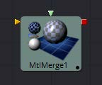
MtlMerge3D.BackgroundMaterial
[橙色，必需的]此输入将接受2D图像或3D材质以用作背景材质。在基本着色模型中，2D图像将被视为漫反射纹理贴图。
MtlMerge3D.ForegroundMaterial
[绿色，可选的]此输入将接受2D图像或3D材质以用作前景材质。
在基本着色模型中，2D图像将被视为漫反射纹理贴图。
Controls
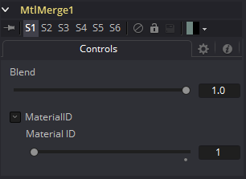
Blend
Material Merge的Blend行为类似于图像的Dissolve(DX)工具。使用滑块的值将两种材质/纹理混合在一起，以确定每个输入所贡献的百分比。虽然背景和前景输入可以是2D图像而不是材质，但此工具的输出始终是材质。
Material ID
此滑块设置分配给此材质的数字标识符。如果渲染器中启用了相应选项，这个值将被渲染到MatID辅助通道中。
Phong [3Ph]
Phong工具是一种基本的照明材质，可应用于3D场景中的几何物体。它描述了对象如何响应光，并提供大量纹理贴图输入，以允许精确控制材质的漫反射，镜面反射和凹凸贴图组件。
虽然产生类似于Blinn模型产生的高光，但它更常用于闪亮/抛光的塑料表面。
外部输入
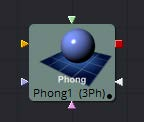
Phong.DiffuseTex
[橙色，可选的]此输入将接受2D图像或3D材质作为漫反射纹理贴图。
Phong.SpecularColorTex
[绿色，可选的]此输入将接受2D图像或3D材质作为高光彩色纹理贴图。
Phong.SpecularIntensityTex
[洋红色，可选的]此输入将接受2D图像或3D材质作为材质高光高光的强度贴图。当输入为2D图像时，alpha通道用于创建贴图，而颜色通道则被丢弃。
Phong.SpecularExponentTex
[淡蓝色，可选的]此输入将接受2D图像或3D材质作为材质高光的衰减贴图。当输入为2D图像时，alpha通道用于创建贴图，而颜色通道则被丢弃。
Phong.BumpmapTex
[白色，可选的]此输入将接受2D图像或3D材质，然后使用RGB信息作为纹理空间法线。
这些输入中的每一个都将纹理贴图中的像素乘以工具本身中等效命名的参数。这提供了用于缩放部分材质的有效方法。
当工具有像这个一样多的输入时，通常很难精确地进行连接。按住Option(Mac OS X)或Alt(Windows)键，同时将另一个工具的输出拖动到工具块上，并在释放鼠标左键时按住Option或Alt键。将出现一个小菜单，其中列出该工具提供的所有输入。单击所需的输入完成连接。
Controls
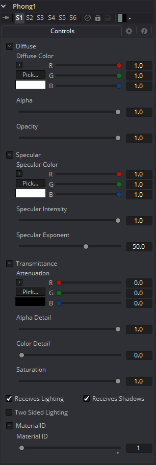
Diffuse
Diffuse描述基本表面特征，没有任何额外的效果，如反射或高光。除了定义对象的基本颜色外，漫反射颜色还定义对象的透明度。
漫反射纹理贴图中的alpha可以用来使任何物体表面的部分透明。
Diffuse Color
材质的Diffuse Color描述了材质在间接或环境光照射下呈现的基色。如果提供了漫反射纹理贴图，那么这里提供的颜色值将乘以纹理中的颜色值。
Alpha
这个滑块设置材质的Alpha通道值。这同样影响漫反射和高光颜色，并影响渲染输出中材质的alpha值。如果提供了漫反射纹理贴图，那么这里的alpha值集将乘以纹理贴图中的alpha值。
Opacity
降低材质的不透明度会同样降低高光和漫反射颜色的颜色和alpha值，使材质透明。
Specular
Specular部分的参数描述了表面高光的外观。对于每个光照模型，这些值的计算方法不同。
Specular Color
Specular Color决定了从光亮表面反射的光的颜色。一种材料的高光越高，它看起来就越有光泽。像塑料和玻璃这样的表面往往有白色高光，而金属表面则有像黄金这样的高光，这些高光从材质的颜色中继承了它们的颜色。如果提供了高光纹理映射，那么这里提供的值将乘以纹理中的颜色值。
Specular Intensity
Specular Intensity控制高光的强度。如果提供高光强度纹理，则此值乘以纹理的alpha值。
Transmittance
Transmittance控制着光通过材质的方式。例如，一个实心的蓝色球体会投射出一个黑色的阴影，但是一个半透明的蓝色塑料球体会投射出一个密度低得多的蓝色阴影。
还有一个单独的Opacity选项。不透明度决定了渲染时实际表面的透明度。Fusion允许分别调整不透明度和透射率。对于那些刚开始不熟悉3D软件的人来说，这可能有点违反直觉。有可能存在一个表面是完全不透明的，但会100%地透射到达它的光，有效地使它成为一个发光/发射表面。
Attenuation
Attenuation决定了有多少颜色通过物体。对于具有透射阴影的对象，将衰减设置为(1,1,1)，这意味着100%的绿色、蓝色和红色光线通过该对象。将此颜色设置为RGB(1,0,0)意味着材质将传输100%到达表面的红色，但没有绿色或蓝色的光。这允许了“彩色玻璃”阴影。
Alpha Detail
当Alpha Detail滑块设置为0时，对象的Alpha通道将被忽略，整个对象将投射阴影。如果将其设置为1，alpha通道将确定对象投射阴影的部分。
Color Detail
Color Detail滑块通过漫反射颜色+纹理颜色调节通过表面的光线。使用此方法可以投射阴影，其中包含应用于对象的纹理的颜色细节。将滑块从0增加到1会给阴影带来更多的漫反射颜色和纹理颜色。注意，当传输颜色时忽略了对象的alpha值和不透明度，允许具有实alpha值的对象仍然将其颜色透射到阴影。
Saturation
Saturation滑块控制透射到阴影的颜色部分的饱和度。将此设置为0.0将导致单色阴影。
Receives Lighting/Shadows
这些复选框控制材质是否受到场景中光照和阴影的影响。如果关闭，该对象将始终是完全点亮和/或无阴影。
Two Sided Lighting
通过在表面的背面添加一组面向相反方向的法线，从而使曲面实际上是双面的。这通常是关闭的，以提高渲染速度，但可以为2D表面或不完全封闭的对象打开，以允许反向或内部表面也可见。
通常，在3D应用程序中，只有一个表面的正面是可见的，而背面是经过筛选的，因此，如果相机在3D应用程序中围绕一个平面旋转，当它到达背面时，这个平面将变得不可见。在3D应用程序中，让一个平面双面化相当于在第一个平面上添加另一个平面，但旋转180度，因此法线在背面朝相反的方向。因此，当你绕着背面旋转时，你会看到第二个像平面，它的法线朝相反的方向。
当你制作一个双面的曲面时，Fusion和3D应用做的是一样的事情。由于Fusion在缺省情况下不会剔除背面的多边形，所以出现了关于双面的混淆。如果你在Fusion中绕着一个单面旋转，你仍然会从背面看到它（但你看到的是正面复制到背面，就像它是透明的一样）。让平面两面化实际上增加了第二套法线到平面的背面。
注意：一旦您使表面透明，这将变得相当混乱，因为同样的规则仍然适用并产生结果，这是违反直觉的。如果你从正面看一个从背面照亮的透明双面表面，它看起来就不亮。
Material ID
此滑块设置分配给此材质的数字标识符。如果渲染器中启用了相应选项，这个值将被渲染到MatID辅助通道中。
Reflect [3RR]
Reflect工具用于向材质添加环境贴图反射和折射。提供反射和掠射强度、衰减、各通道折射率和染色。多个纹理贴图输入可以修改每个参数的行为。
反射工具通常与标准照明材质（如Blinn、Cook Torrance、Phong或Ward）组合，将该工具的输出连接到反射工具的背景材质输入。然后将反射纹理连接到反射纹理输入。这可以是2D图像，但更常见的是由Sphere Map或Cube Map工具创建的环境贴图。
环境贴图是一种假定对象的环境与对象无限远的近似。最好将其描绘为以物体为中心的立方体或球体。特别地，这种无限距离假定意味着物体不能与它们自身相互作用（例如，茶壶手柄上的反射不会显示茶壶的主体而是显示无限的环境贴图）。这也意味着如果在场景中的多个对象上使用相同的立方体贴图，那些对象将不会相互反射（例如，两个相邻对象不会彼此反射）。如果希望对象相互反射，则需要为每个对象渲染立方体贴图。
有关详细信息，请参阅本手册中的Reflections and Refractions。
外部输入
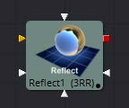
Reflect.BackgroundMaterial
[橙色，可选的]此输入需要2D图像或3D材质。 如果提供了2D图像，该工具会将其视为应用于基本材质的漫反射纹理贴图。
Reflect.Reflection.ReflectionTex
[绿色，可选的]此输入需要2D图像或3D材质。RGB通道用作反射纹理，并忽略alpha。
Reflect.Reflection.ReflectionIntensityTex
[洋红色，可选的]此输入需要2D图像或3D材质。纹理的alpha通道乘以反射的强度。
Reflect.Refraction.RefractionTex
[淡蓝色，可选的]此输入需要2D图像或3D材质。RGB通道用作折射纹理。
Reflect.BumpmapTex
[白色，可选的]此输入将接受2D图像或3D材质，然后将RGB信息用作纹理空间法线。
Controls
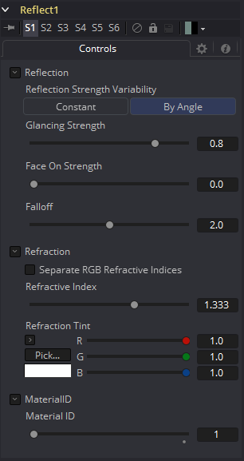
Reflection
Reflection Strength Variability
这个多按钮控件可以设置为Constant或By Angle来改变反射强度，根据相对于观察者的表面方向。以下三个控件只有在此控件设置为By Angle时才可见。
Glancing Strength
[By Angle]Glancing Strength控制着反射面远离相机的几何物体区域的反射强度。
Face On Strength
[By Angle]Face On Strength控制反射的强度，为那些部分的几何形状直接反射回相机。
Falloff
[By Angle]Falloff在强度区域上的扫瞄和脸部之间转换的锐度。它可以被认为是类似于将伽玛校正应用于Face On和Glancing值之间的梯度。
Constant Strength
[Constant Angle]这种控制只有在Reflection Strength Variability设置为Constant时才可见。在这种情况下，反射的强度是恒定的，与反射的入射角无关。
Refraction
如果进入的背景材质的不透明度低于1，则可以使用环境贴图作为折射纹理，也可以在透明物体中模拟折射效果。
Separate RGB Refraction Indices
启用此复选框后，将隐藏Refraction Index滑块，并在其位置出现三个调节红、绿、蓝通道折射率的滑块。例如，这允许模拟在厚而不完美的玻璃中常见的光谱折射效应。
Refraction Index
这个滑块控制了通过一个表面查看环境贴图的变形程度。整体变形是基于入射角。由于这是一个近似，而不是模拟，结果并不打算准确地模拟真实折射。
Refraction Tint
折射纹理与色调颜色相乘，用于模拟滤过颜色的折射。它可以用来模拟在有色玻璃中的着色类型，例如在许多品牌的啤酒瓶中可以看到。
Stereo Mix [3SMM]
外部输入
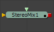
StereoMix.LeftMaterial
[橙色，必需的]此输入将接受2D图像或3D材质，以用作左眼渲染的材质。如果使用2D图像，则使用基本材质类型将其转换为漫反射纹理贴图。
StereoMix.RightMaterial
[橙色，必需的]此输入将接受2D图像或3D材质，以用作右眼渲染的材质。如果使用2D图像，则使用基本材质类型将其转换为漫反射纹理贴图。
虽然输入可以是2D图像或3D材质，但输出总是材质。
Controls
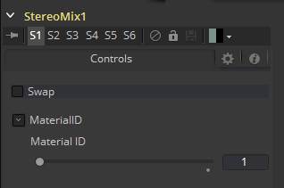
Swap
这个选项将交换工具的两个输入。
Material ID
此滑块设置分配给此材质的数字标识符。如果渲染器中启用了相应选项，这个值将被渲染到MatID辅助通道中。
Ward [3Wd]
Ward工具是一种基本的照明材质，可以应用于3D场景的几何物体。它描述了物体对光线的反应，并提供了大量的纹理贴图输入，允许对材质的漫反射、高光和凹凸贴图组件进行精细控制。
特别是，Ward工具是模拟拉丝金属表面的理想工具，因为高光可以沿着映射坐标的U或V方向拉长。这就是所谓的各向异性（Anisotrophic）亮点。
Ward工具输出一个三维材质，可以连接到任何三维几何工具上的材质输入。
外部输入
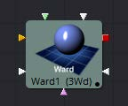
Ward.DiffuseTex
[橙色，可选的]此输入将接受2D图像或3D材质作为漫反射纹理贴图。
Ward.SpecularColorTex
[绿色，可选的]此输入将接受2D图像或3D材质作为高光彩色纹理贴图。
Ward.SpecularIntensityTex
[洋红色，可选的]此输入将接受2D图像或3D材质作为材质高光高光的强度贴图。当输入为2D图像时，alpha通道用于创建贴图，而颜色通道则被丢弃。
Ward.SpreadUTexture
[淡蓝色，可选的]该输入将接受2D图像或3D材质。此工具控件中的Spread U选项的值将与材质的alpha通道中的像素值相乘。
Ward.SpreadVTexture
[淡蓝色，可选的]该输入将接受2D图像或3D材质。此工具控件中的Spread V选项的值将与材质的alpha通道中的像素值相乘。
Ward.BumpmapTex
[白色，可选的]此输入将接受2D图像或3D材质，然后使用RGB信息作为纹理空间法线。
这些输入中的每一个都将纹理贴图中的像素乘以工具本身中等效命名的参数。这提供了用于缩放部分材质的有效方法。
当工具有像这个一样多的输入时，通常很难精确地进行连接。按住Option(Mac OS X)或Alt(Windows)键，同时将另一个工具的输出拖动到工具块上，并在释放鼠标左键时按住Option或Alt键。将出现一个小菜单，其中列出该工具提供的所有输入。单击所需的输入完成连接。
Controls
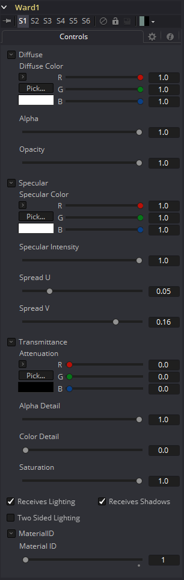
Diffuse
Diffuse描述基本表面特征，没有任何额外的效果，如反射或高光。除了定义对象的基本颜色外，漫反射颜色还定义对象的透明度。漫反射纹理贴图中的alpha可以用来使任何物体表面的部分透明。
Diffuse Color
材质的Diffuse Color描述了材质在间接或环境光照射下呈现的基色。如果提供了漫反射纹理贴图，那么这里提供的颜色值将乘以纹理中的颜色值。
Alpha
这个滑块设置材质的Alpha通道值。这同样影响漫反射和高光颜色，并影响渲染输出中材质的alpha值。如果提供了漫反射纹理贴图，那么这里的alpha值集将乘以纹理贴图中的alpha值。
Opacity
降低材质的不透明度会同样降低高光和漫反射颜色的颜色和alpha值，使材质透明。
Specular
Specular部分的参数描述了表面高光的外观。对于每个光照模型，这些值的计算方法不同。
Specular Color
Specular Color决定了从光亮表面反射的光的颜色。一种材料的高光越高，它看起来就越有光泽。像塑料和玻璃这样的表面往往有白色高光，而金属表面则有像黄金这样的高光，这些高光从材质的颜色中继承了它们的颜色。如果提供了高光纹理映射，那么这里提供的值将乘以纹理中的颜色值。
Specular Intensity
Specular Intensity控制高光的强度。如果提供高光强度纹理，则此值乘以纹理的alpha值。
Spread U
Spread U控制物体UV-Map中高光高光沿U轴的衰减。值越小，衰减越明显，在这个方向上材质出现的越光滑和光泽。如果提供了Spread U纹理，那么这个值乘以纹理的alpha值。
Spread V
Spread V控制物体UV-Map中高光高光沿V轴的衰减。值越小，衰减越明显，在这个方向上材质出现的越光滑和光泽。如果提供了Spread U纹理，那么这个值乘以纹理的alpha值。
Transmittance
Transmittance控制着光通过材质的方式。例如，一个实心的蓝色球体会投射出一个黑色的阴影，但是一个半透明的蓝色塑料球体会投射出一个密度低得多的蓝色阴影。
还有一个单独的Opacity选项。不透明度决定了渲染时实际表面的透明度。Fusion允许分别调整不透明度和透射率。对于那些刚开始不熟悉3D软件的人来说，这可能有点违反直觉。有可能存在一个表面是完全不透明的，但会100%地透射到达它的光，有效地使它成为一个发光/发射表面。
Attenuation
Attenuation决定了有多少颜色通过物体。对于具有透射阴影的对象，将衰减设置为(1,1,1)，这意味着100%的绿色、蓝色和红色光线通过该对象。将此颜色设置为RGB(1,0,0)意味着材质将传输100%到达表面的红色，但没有绿色或蓝色的光。这允许了“彩色玻璃”阴影。
Alpha Detail
当Alpha Detail滑块设置为0时，对象的Alpha通道将被忽略，整个对象将投射阴影。如果将其设置为1，alpha通道将确定对象投射阴影的部分。
Color Detail
Color Detail滑块通过漫反射颜色+纹理颜色调节通过表面的光线。使用此方法可以投射阴影，其中包含应用于对象的纹理的颜色细节。将滑块从0增加到1会给阴影带来更多的漫反射颜色和纹理颜色。注意，当传输颜色时忽略了对象的alpha值和不透明度，允许具有实alpha值的对象仍然将其颜色透射到阴影。
Saturation
Saturation滑块控制透射到阴影的颜色部分的饱和度。将此设置为0.0将导致单色阴影。
Receives Lighting/Shadows
这些复选框控制材质是否受到场景中光照和阴影的影响。如果关闭，该对象将始终是完全点亮和/或无阴影。
Two Sided Lighting
通过在表面的背面添加一组面向相反方向的法线，从而使曲面实际上是双面的。这通常是关闭的，以提高渲染速度，但可以为2D表面或不完全封闭的对象打开，以允许反向或内部表面也可见。
通常，在3D应用程序中，只有一个表面的正面是可见的，而背面是经过筛选的，因此，如果相机在3D应用程序中围绕一个平面旋转，当它到达背面时，这个平面将变得不可见。在3D应用程序中，让一个平面双面化相当于在第一个平面上添加另一个平面，但旋转180度，因此法线在背面朝相反的方向。因此，当你绕着背面旋转时，你会看到第二个像平面，它的法线朝相反的方向。
当你制作一个双面的曲面时，Fusion和3D应用做的是一样的事情。由于Fusion在缺省情况下不会剔除背面的多边形，所以出现了关于双面的混淆。如果你在Fusion中绕着一个单面旋转，你仍然会从背面看到它（但你看到的是正面复制到背面，就像它是透明的一样）。让平面两面化实际上增加了第二套法线到平面的背面。
注意：一旦您使表面透明，这将变得相当混乱，因为同样的规则仍然适用并产生结果，这是违反直觉的。如果你从正面看一个从背面照亮的透明双面表面，它看起来就不亮。
Material ID
此滑块设置分配给此材质的数字标识符。如果渲染器中启用了相应选项，这个值将被渲染到MatID辅助通道中。